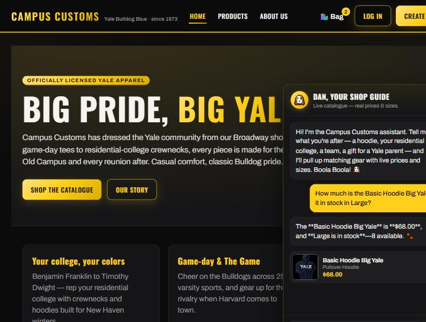
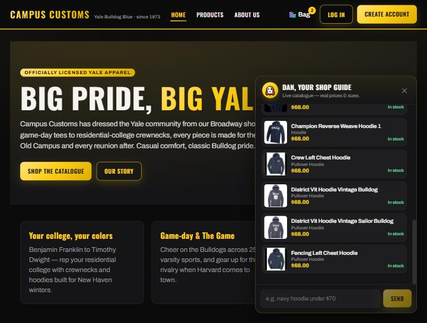
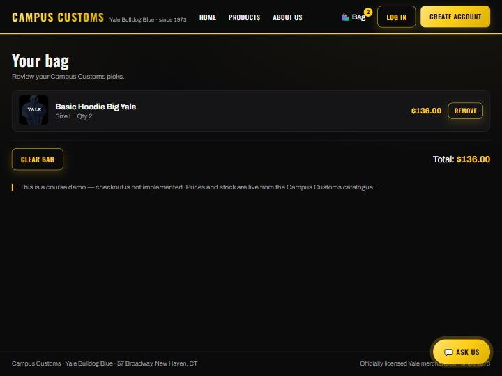

Checking an item's stock and price from the database

Asked the assistant how much the Basic Hoodie Big Yale costs and whether
Large is available. It answered $68.00 and
Large in stock — 8 available, matching the database
exactly, and surfaced the product card. This shows price and size-level
inventory are grounded in campus_customs.db, not invented.
Category question ("hoodies") renders product cards

Asking "What hoodies do you have?" makes the agent search the catalogue and return structured results that the site renders as product cards — each with the image, name, brief info, price ($68.00), and stock status. Every card links to that product's detail page.
"Add to Bag" cart with size selection and a live bag badge

A shopper selected a size and added the Basic Hoodie Big Yale (Size L) to their bag. The nav Bag badge shows 2 and the cart page lists the item with a running Total of $136.00, with Remove and Clear options. The bag persists across pages via local storage.